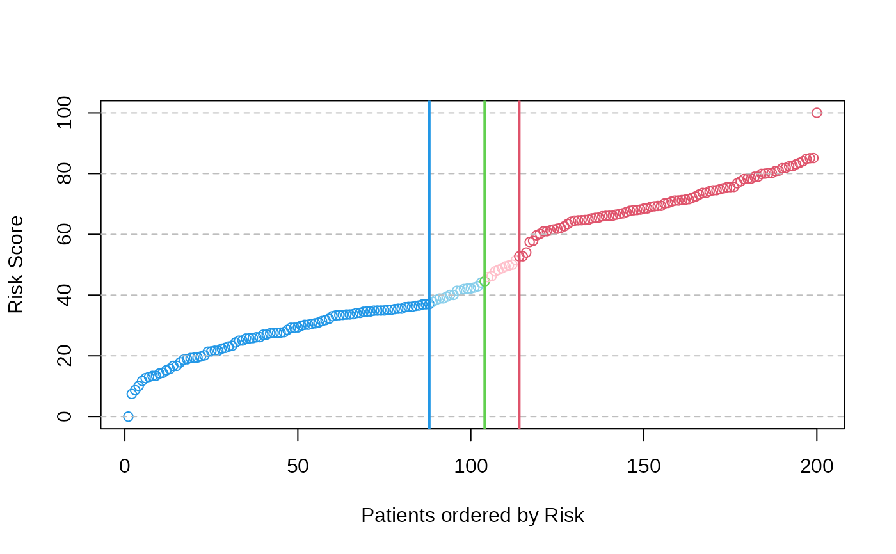
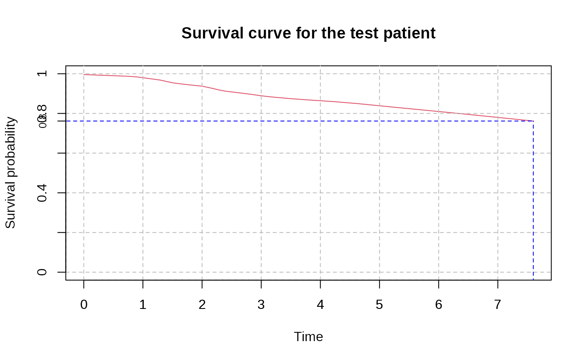

predSurvCurve
predSurvCurve.RdFunction to predict the expected survival curve for a test patient given the risk score provided by a Cox regression model.
Arguments
- cox_pred_training
A numeric vector representing the predicted risk scores (or log-risk scores) from the Cox model for the training set. It can be obtained from *predict.patientRisk* function.
- mSurv
A data frame with two columns: "time" representing survival times, and "status" representing the event status (1 for event, 0 for censored) for the training dataset.
- cox_pred_test
A numeric vector of length 1 representing the predicted risk score (or log-risk score) for the test patient. It can be obtained from *predict.patientRisk* function.
- eval_surv_times
A numeric vector of times at which the survival curve should be evaluated. If NULL (default), the times will be taken from the training data up to the maximum event time.
Details
This function will obtain the expected survival curve for a test patient given the risk score estimated by a multivariate Cox regression model. The Breslow estimator is considered to approximate the baseline Hazard. The cumulative baseline survival function is smoothed using the Friedman's super smoother. The function interpolates linearly the survival probability for time points not in the training set.
Value
The function provides a plot for the expected survival curve. It shows also the median survival time, that is, the time at which the survival probability drops to 0.5. The function also returns a list with the following objects:
- eval_times
Vector of times in years at which the survival curve has been evaluated.
- S_0_t
Vector with the baseline survival probability estimated at each evaluation time.
- S_test_patient
Vector with the survival probability estimated at each evaluation time for a given test patient.
References
Martinez-Romero, J., Bueno-Fortes, S., Martín-Merino, M. et al. (2018) Survival marker genes of colorectal cancer derived from consistent transcriptomic profiling. BMC Genomics 19 (Suppl 8), 857 . doi:10.1186/s12864-018-5193-9
Santiago Bueno-Fortes, Alberto Berral-Gonzalez, José Manuel Sánchez-Santos, Manuel Martin-Merino, Javier De Las Rivas (2023) Identification of a gene expression signature associated with breast cancer survival and risk that improves clinical genomic platforms, Bioinformatics Advances, Volume 3, Issue 1, vbad037, doi:10.1093/bioadv/vbad037
Examples
data(predSurvCurve)
# COX prediction for the training set
set.seed(5)
cox_pred_training <- predict.patientRisk(multivariate_risk_predictor, mExprSelectedGenes)

cox_pred_training$risk_score
#> GSM491233 GSM540243 GSM540162 GSM540353 GSM540238 GSM540197
#> 0.794974646 -0.681587724 0.628877440 0.509780999 0.641865583 -0.891489008
#> GSM447221 GSM540205 GSM491226 GSM540241 GSM491214 GSM540140
#> 0.589102923 -1.046099095 -0.397609723 -0.517601962 -0.481844371 0.565231240
#> GSM540270 GSM540182 GSM540150 GSM540267 GSM491260 GSM540247
#> -0.330692030 -0.250508276 -0.726282168 0.336248198 -0.306032540 -0.927606531
#> GSM491264 GSM540364 GSM540240 GSM540282 GSM491284 GSM491262
#> -0.344837523 0.637596957 -0.393924241 0.854486426 0.522117388 -0.581046627
#> GSM540161 GSM491195 GSM491240 GSM447202 GSM540310 GSM540292
#> -0.219403852 0.464498323 -0.651585598 -0.142053848 0.549845582 0.585690181
#> GSM540272 GSM447231 GSM491276 GSM540291 GSM447243 GSM540318
#> 0.516902612 0.131253139 -0.789568119 1.024277344 -0.955420327 -0.369948480
#> GSM540342 GSM540328 GSM540253 GSM540370 GSM540167 GSM540319
#> -0.447607166 -0.219205014 -0.477420623 0.980114711 0.095025119 -0.768131354
#> GSM540123 GSM491223 GSM540135 GSM491278 GSM540110 GSM540248
#> 0.933678908 0.931988575 -0.975401561 -0.264072934 0.055889753 0.533906925
#> GSM540332 GSM540297 GSM540341 GSM491281 GSM491261 GSM447212
#> -0.354534227 -0.436061029 -0.864453342 -0.864035135 -0.490204702 -0.498585701
#> GSM540125 GSM540179 GSM540235 GSM540126 GSM491222 GSM540229
#> 0.500922625 -0.400651106 0.261516585 -0.360551989 -0.700486553 -0.362458948
#> GSM540178 GSM540201 GSM491267 GSM447205 GSM540284 GSM540118
#> 0.023503458 0.498925415 -0.603285234 -0.788250628 -0.413032102 0.382042676
#> GSM540120 GSM540230 GSM447209 GSM491181 GSM540261 GSM540148
#> -0.405871811 -0.562381594 0.552437934 0.476263340 0.967338964 -0.778990887
#> GSM540231 GSM491282 GSM540237 GSM540351 GSM540339 GSM540344
#> -0.318786787 -0.793087600 0.500093747 0.663986174 0.949067914 -0.633763936
#> GSM447197 GSM491288 GSM540142 GSM540203 GSM491211 GSM540173
#> 0.617408897 -0.152466478 -0.568383120 -0.566699758 0.039410484 -0.726762253
#> GSM540281 GSM491272 GSM491180 GSM540280 GSM491265 GSM540245
#> 0.638319178 -0.604439433 0.950501390 -0.344058950 -0.252004567 -0.403060556
#> GSM540359 GSM540154 GSM491198 GSM540330 GSM491199 GSM540159
#> 0.740253963 -0.181718620 0.995363711 -0.328253368 0.650882475 0.455762677
#> GSM540196 GSM540215 GSM540293 GSM447206 GSM540350 GSM491182
#> -0.048464995 0.495713353 -0.165993803 0.458307623 0.833496750 0.837228314
#> GSM491219 GSM540337 GSM491204 GSM491231 GSM491263 GSM540371
#> 0.813582525 -0.904517574 -0.369419678 0.645825090 -0.616201197 0.446064604
#> GSM447227 GSM491183 GSM540354 GSM540302 GSM540285 GSM491197
#> -0.282674222 0.854974984 0.272019486 0.905487744 0.706817722 0.888058296
#> GSM447233 GSM540165 GSM540124 GSM540340 GSM540295 GSM491196
#> -0.579771958 -0.557923192 0.590214471 -0.107481272 -0.831604907 0.545018668
#> GSM491191 GSM491279 GSM540277 GSM491234 GSM540166 GSM540273
#> 0.909951926 -0.005467978 -0.383290681 -0.181787703 -0.456630059 0.761567768
#> GSM540363 GSM447215 GSM540268 GSM491269 GSM540219 GSM540299
#> 0.880313617 0.722293265 1.017307157 -0.611620506 0.748843899 -0.688590901
#> GSM540213 GSM491238 GSM540233 GSM491227 GSM491257 GSM540356
#> 0.131400546 0.675354671 -0.470153182 -0.964564708 -0.315638752 0.556133571
#> GSM540143 GSM540160 GSM540130 GSM491220 GSM540141 GSM540199
#> -0.302052246 0.165832662 0.403964921 -0.517077697 -0.361430390 -0.354970693
#> GSM540109 GSM447207 GSM447232 GSM491242 GSM491246 GSM540347
#> 0.730270044 -1.324825189 0.390235265 -0.160417359 -0.707647295 -0.304237944
#> GSM540157 GSM491259 GSM540362 GSM491184 GSM540334 GSM491203
#> 0.358018505 -0.614406250 0.483969244 0.692642414 -1.119258251 0.007772479
#> GSM491229 GSM491268 GSM540265 GSM491202 GSM491245 GSM540144
#> 0.359191133 -0.732841436 0.612081133 0.887230704 1.434945962 -0.326795478
#> GSM491193 GSM491189 GSM540137 GSM540188 GSM491221 GSM540266
#> 0.732130845 0.581510992 -0.347999654 -0.490966818 -0.514560060 -0.933858867
#> GSM491252 GSM447226 GSM447216 GSM447198 GSM540172 GSM491275
#> -0.537298336 0.321934031 -0.161678464 0.566925069 0.836746533 -0.235081735
#> GSM447199 GSM540249 GSM491280 GSM491178 GSM540220 GSM447208
#> -0.361261231 0.480987015 -1.084941759 0.759941718 -0.372148617 -0.953970457
#> GSM540216 GSM540367 GSM540208 GSM540108 GSM540269 GSM540244
#> -0.095950104 0.758258480 -0.396851963 0.047783889 -0.565467348 -0.804141272
#> GSM540195 GSM540286 GSM491228 GSM540369 GSM447245 GSM540322
#> 0.425527325 -1.000275669 0.461504343 0.367311431 -0.382339451 -0.735490645
#> GSM540177 GSM540155 GSM540242 GSM540346 GSM540214 GSM491225
#> -0.635546876 0.375293584 -0.057143173 1.022823575 0.459705935 -0.808013599
#> GSM540349 GSM491243
#> 0.882444715 0.706730129
# COX prediction for the test patient
set.seed(5)
cox_pred_test <- predict.patientRisk(multivariate_risk_predictor, mExprs_testSingleData)
#> Normalized patient Risk (0 100): 27.9017675117161
#> The patient is classified as Low Risk
#> Low Risk interval: (0, 37.0600635839135)
cox_pred_test$risk_score
#> Sample4
#> -0.5548003
# Survival curve estimation
eval_surv_times <- seq(0, max(mPheno$time), by = 0.1)
set.seed(5)
surv_curv_cox <- predSurvCurve(cox_pred_training$risk_score, mPheno[, c(2, 3)], cox_pred_test$risk_score, eval_surv_times)
#> The Survival curve is only estimated for the interval [%.1f, %.1f]07.66083333333333
#> No observation beyond this point in the training set
